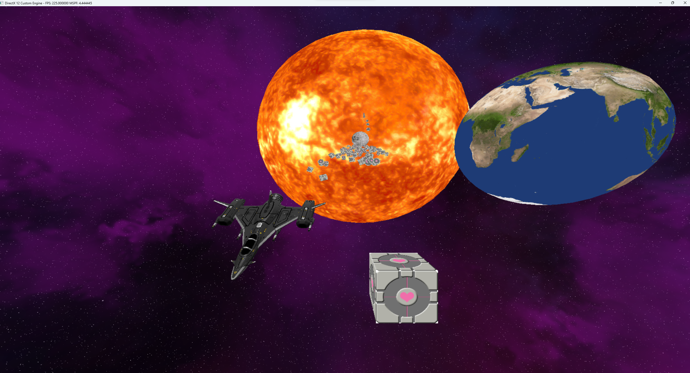
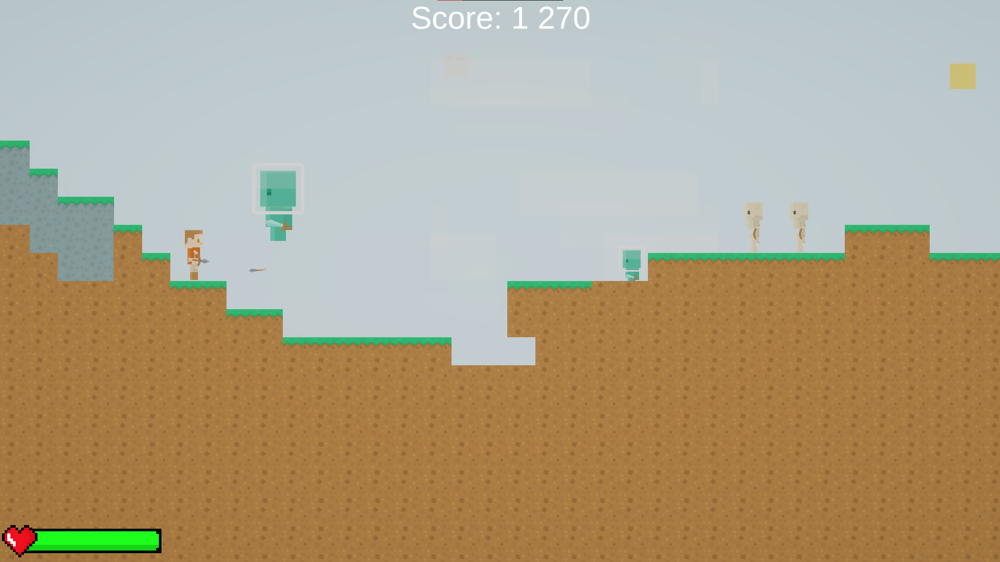
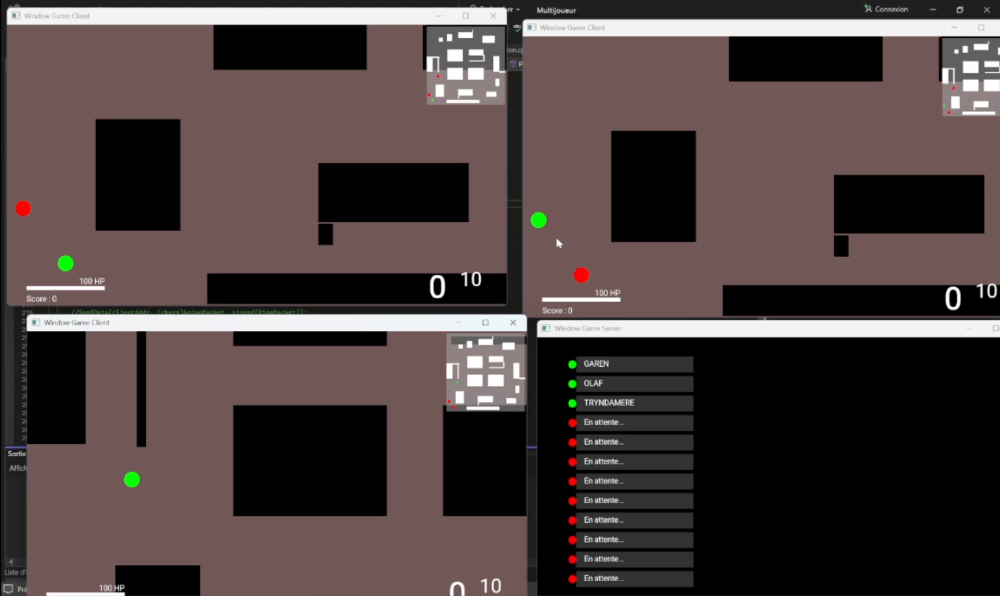
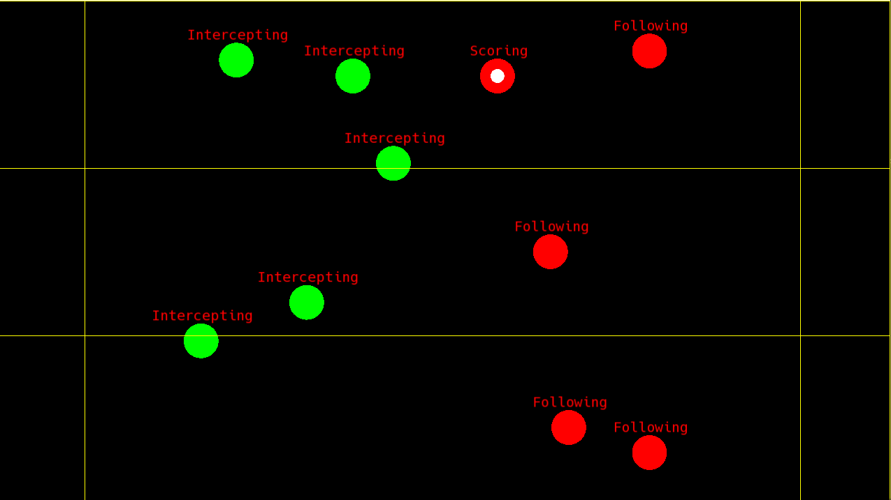
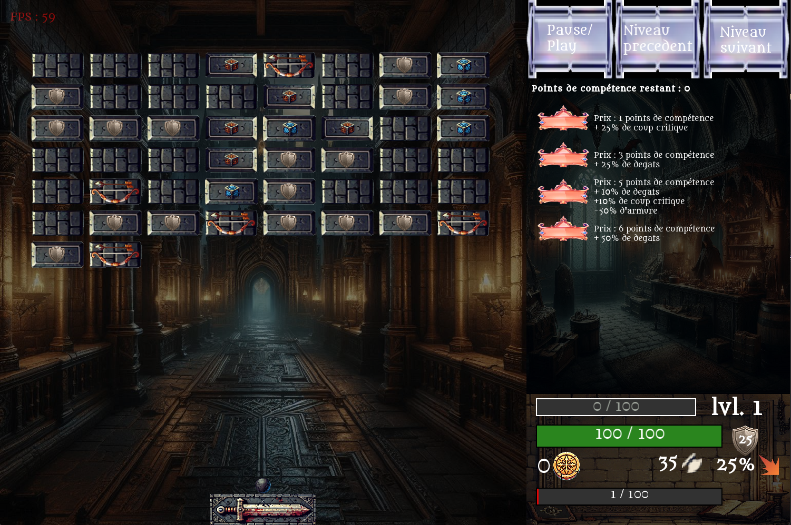
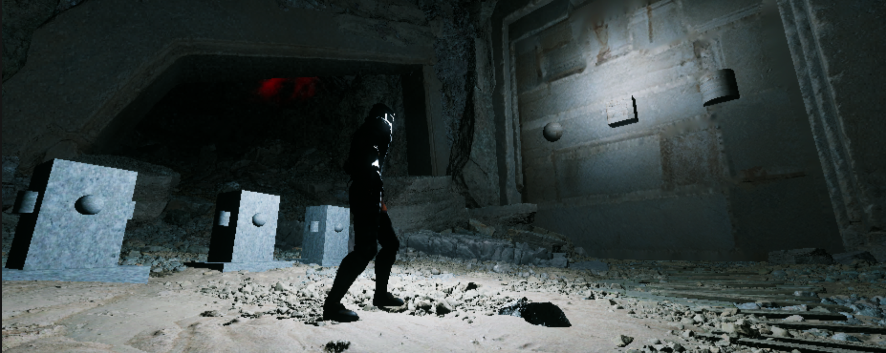

Projets Récents

Game Engine
Développement d'un moteur de jeu en C++ et DirectX12 avec création d'un jeu simple dans le thème de l'espace. L'architecture du moteur est inspirée de celle d'Unity, avec de l'ECS et des scripts. Ce projet de 3 semaines m'a permis de comprendre l'architecture et les principes d'un moteur de jeu tel qu'Unity.

Hell Survivor
Création en une semaine d’un jeu développé sur Unity intégrant des niveaux générés procéduralement. Le joueur progresse à travers des vagues d’ennemis et, en cas de mort, est téléporté dans des enfers également générés procéduralement dont il doit s’échapper pour revenir à la surface et poursuivre son aventure.

Multiplayer
Ce projet s’est déroulé sur une période de deux semaines, durant lesquelles nous devions concevoir un jeu multijoueur en utilisant la bibliothèque Winsock. Nous avons mis en place une architecture client-serveur, reposant sur des threads chargés de gérer l’envoi et la réception des paquets de données.

Rugby Game AI
Création d'une simulation de partie de Rugby entre IA en 5 contre 5. Utilisation de l'architecture State Machine pour le comportement de l'intelligence artificielle. Projet réalisé en 1 semaine.

Casse Brique RPG
Création d’un RPG Casse-Brique développé en C++ avec SFML, intégrant un système de progression complet avec expérience, niveaux, arbre de compétences et power-ups pour dynamiser le gameplay. Le jeu propose différentes variantes de briques ainsi qu’un combat de boss évolutif offrant un défi croissant au joueur.

Dungeon knight
Création d'un jeu d'égnime/parcours sur Unreal Engine 5.6.1. Le but était d'apprendre a bien gérer le lien entre C++ et blueprint, en créant une interface C++ et des sytème en C++ pour en faire dériver des blueprints et créer la logique de gameplay à l'intérieur des blueprints.

Zombie game
Création en une semaine d’un FPS de survie zombie développé sur Unity, basé sur un système de vagues avec trois niveaux jouables. Le projet intègre une IA ennemie utilisant le NavMesh, des animations d’armes et d’ennemis avec feedback visuel, ainsi qu’un système de sauvegarde des données de partie.